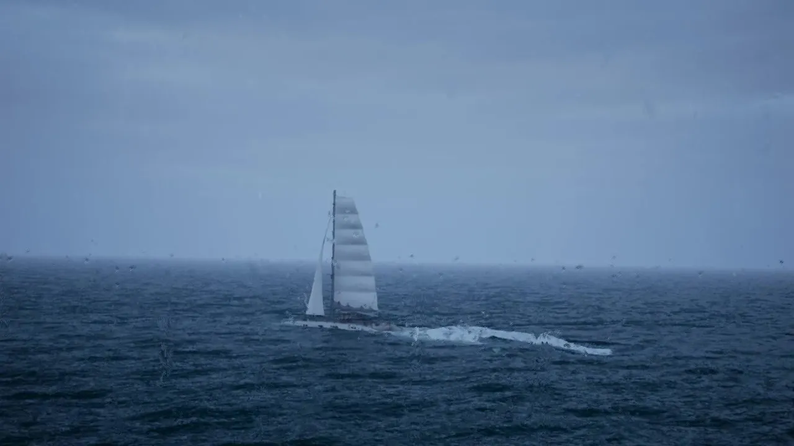

Sensor simulation
Physics-accurate EO feeds across degraded conditions, edge cases, and operational domains.
View productSimulation infrastructure for building, training, and validating autonomous systems.
Physics-accurate EO feeds across degraded conditions, edge cases, and operational domains.
View productFully annotated imagery at scale, without waiting for real-world collection.
View product
Closed-loop validation against configurable scenarios before hardware integration.
View product